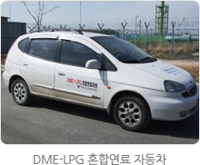
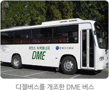
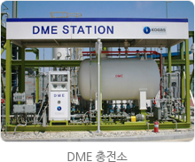
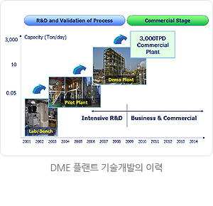
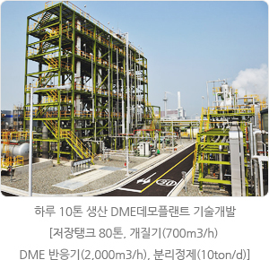
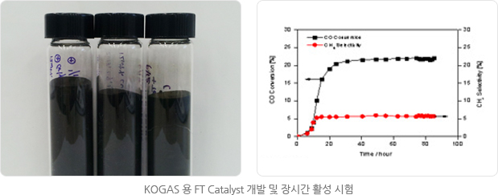
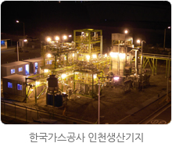
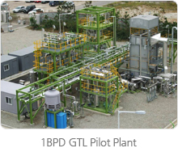
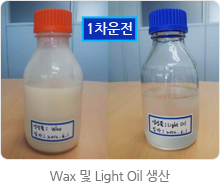

DME/GTL기술
DME 기술개발의 필요성
우리공사는 국제 환경규제 강화 및 에너지 수요 증가를 예상하여, 자원이 부족한 아시아지역에서 청정연료인 DME의 사용이 확산될 것을 고려하여, 해외 선진기술 수준의 국산화 DME 제조기술을 확보하고자 함은 물론 기술개발과 연계하여, 동남아시아 등의 가스전을 대상으로 LNG로 개발하기에는 경제성이 떨어지는 중소규모 가스전, 석탄층메탄(CBM) 등에서 DME를 생산ㆍ보급하는 상용화 사업을 추진하고 있습니다.
DME 특성 및 용도
DME(Dimethyl Ether, CH3OCH3)의 약자로서 천연가스, CBM(Coal Bed Methane), Biomass 등 다양한 원료로부터 반응하여 추출되는 화합물이며, DME는 무색/무취의 연료로서 인체에 무해하고, 사용시 질소산화물과 이산화탄소 등이 적게 발생하여 청정한 연료로서 가정/상업용, 수송용 및 발전용 연료로 이용이 가능한 에너지이다.
DME 특성
- 물리적성질이 LPG와 유사하여 쉽게 혼합되어 DME-LPG 혼합연료로 사용
- 상압, -25℃ 또는 상온, 7기압 상태에서 쉽게 액화됨
- 세탄값이 디젤연료와 유사하여 디젤대체연료로 사용
- 디젤연료 대체시 오염 배출가스가 거의 발생되지 않아 대기환경개선 효과가 큼
DME 용도
- LPG(80%)와 DME(20%)의 혼합연료로 가정과 상업용으로 활용(시범보급 완료)
- 100% DME 연료는 디젤엔진에서 약간의 개조만으로 대체가 가능
(작성 기준일:2012.1.11)
- 
- 
- 
DME 플랜트 기술개발 실적 및 향후계획
- 일 50kg Pilot 플랜트 개발 및 장기운전(‘01~'04. 12)
- 일 10톤 DEMO 플랜트 건설 및 국산화 (‘07~’08)
- 년 300,000톤 DME 생산을 위한 범용플랜트 기본설계 완료(‘10~‘11)
- 중동 가스전 대상 타당성 조사 완료(‘10~‘11)
- 해외가스전 DME 상업 플랜트 건설을 위한 사업추진 (‘12∼)


DME 해외 프랜트 구축을 위한 사업화
- 중동 지역 대상
- 연산 30만톤 DME 플랜트 사업타당성 조사 완료(‘10.2)
- 나이지리아 Onne 지역에 연산 30만톤/기×2기 DME 플랜트 사업을 위한 MOU 체결('12.8) 및 사업타당성 조사 완료(‘12.12)
- 아시아 및 남아메리카 지역 대상
- 말레이시아 사바주에 연산 30만톤 DME 플랜트 사업을 위한 MOU 체결('12.4) 및 예비사업 타당성 조사 실시(‘12.6), 말레이시아 산업진흥청(MIDA)에 사업계획서 제출(’13.1)
- 볼리비아 가스전 개발 및 DME 사업을 위한 MOU 추진중
GTL 기술
GTL은 "Gas to Liquid"의 약어로서 천연가스로부터 합성원유를 만드는 기술을 통칭하며, 특히 가솔린, 디젤, 나프타 등을 제조하는 기술을 말한다. FT 반응에 의해 만들어지 때문에 FT 오일이라고도 부른다.
※ FT : Fischer와 Tropsch(독일 화학자)
- GTL 기술은 1920년경 FT 기술이 개발된 이후, 주로 오일메이저에 의해 지속적 발전으로 검증된 기술임
- 소비시장과 멀리 떨어져 있어 경제적인 가치가 없다고 판단되는 중소규모 가스전의 개발을 가능하게 함
- 컴팩트 GTL 기술은 대기중에서 연소처리되고 있는 천연가스의 활용을 가능하게 하기 때문에 수반가스 처리 문제로 개발이 지연되고 있는 유전의 조기 개발과 생산을 가능하게 하며 연소처리시 발생하는 부정적인 환경영향을 감소
- 향후에는 컴팩트 GTL 기술을 바탕으로 부유식 생산저장운영(FPSO) 설비에 활용하기 위하여 기술개발 중
- GTL 기술개발 현황
- 천연가스로부터 합성석유(GTL) 생산을 위한 촉매개발 (‘09.3.~’12.6.)

- 천연가스로부터 FT 합성유 제조 통합 공정 기술개발 (‘09.9.~’12.8.)
- GTL-FPSO 공정 상용화를 위한 기반기술 개발 (‘11.7.~’16. 6.)
- 합성연료 제조용 Compact 공정 핵심 기술개발 (‘11. 12.~’15. 9.)
- 천연가스로부터 합성석유(GTL) 생산을 위한 촉매개발 (‘09.3.~’12.6.)
- 
- 
- 